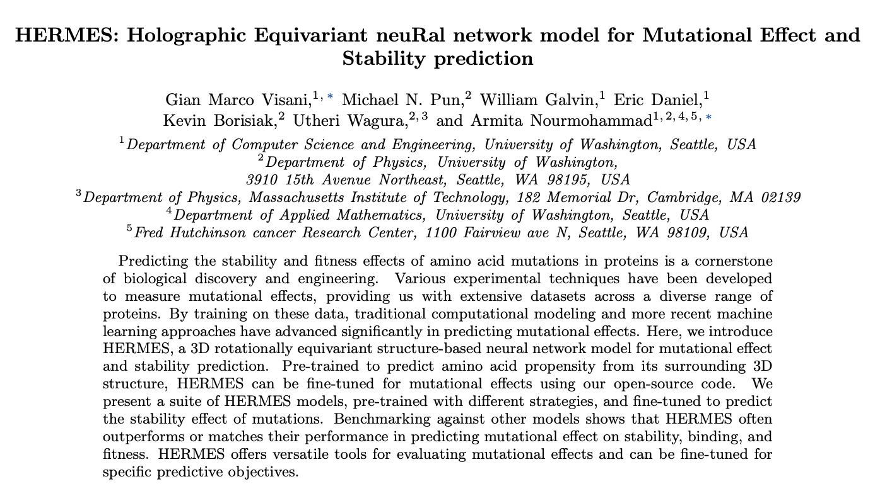

Over my junior year, I spent a lot of my time working in the Statistical Physics of Evolving Systems Lab.
I worked with a PhD student in computer science, Gian Marco Visani.
In the lab, I met and learned from some of the smartest people I have ever had the privilege to be around.
I was so scared in the first group meeting we had, when each student would go over what they were working on, and the math and biology made it sound like they were speaking a different language.
But, I perservered, got more comfortable, and started asking questions when I didn't understand things (which was all the time).
I had been interested in computational biology since I first heard about it from my biology teacher in eighth grade.
Gian Marco was doing physics inspired machine learning to solve protein structure problems,
and I was able to build on my initial knowledge in machine learning and math to help build HERMES.
It was a real privilege to work with these smart people and it feels amazing to be able to point at a ML model and paper as something I helped create.